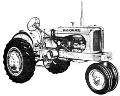

The Allis Chalmers WD. The tricycle version shown here is quite popular in some areas of the midwest but since the AC and Case are both sidered ""off brands"" by John Deere and International diehards, you can sometimes pick up exceptional bargains on both makes.